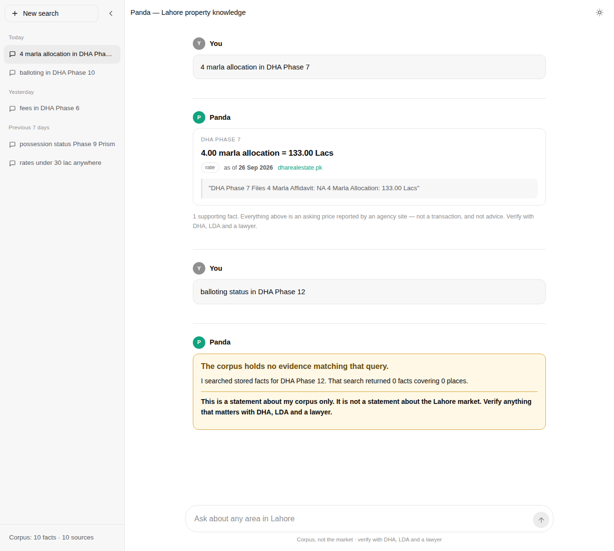
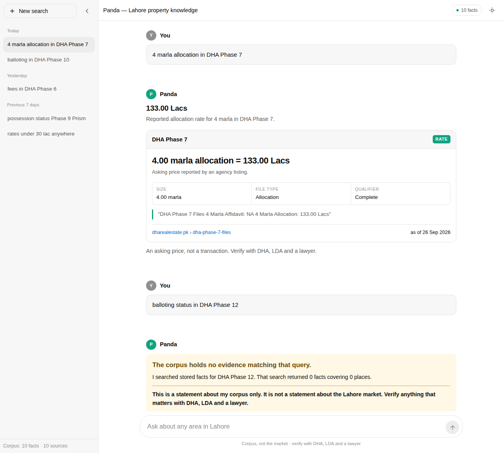
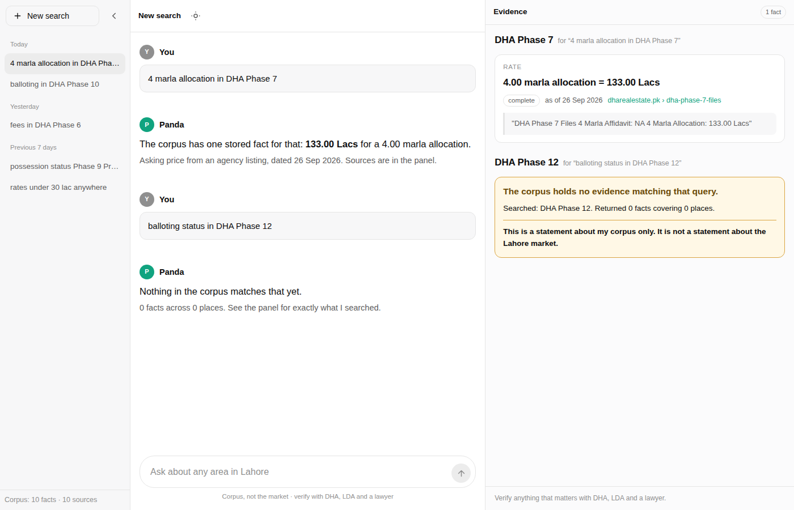

Same data, same queries, same disclosure rules in all three. Only the arrangement differs. Every variant is a static mockup: layout and states only, no real search wired up.
Click any card to open the full interactive mockup. Resize the window to check the responsive behaviour.

One centred column. Evidence sits inside the answer as a compact card.

Headline number, then a full-width card with size, file type and qualifier broken out.

Conversation on the left, every source for the thread on the right, kept side by side.